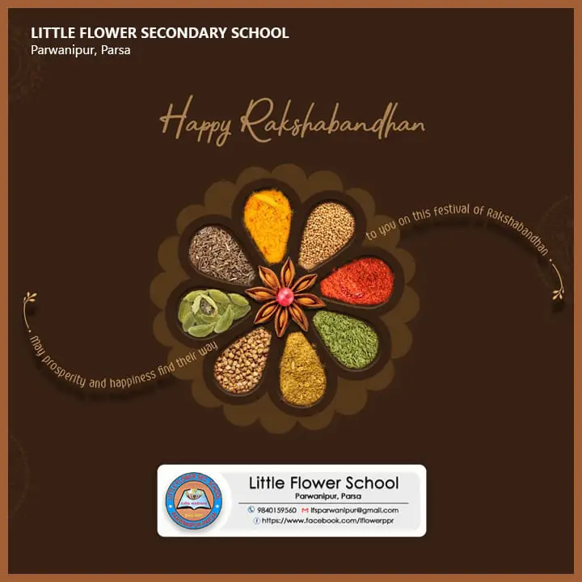
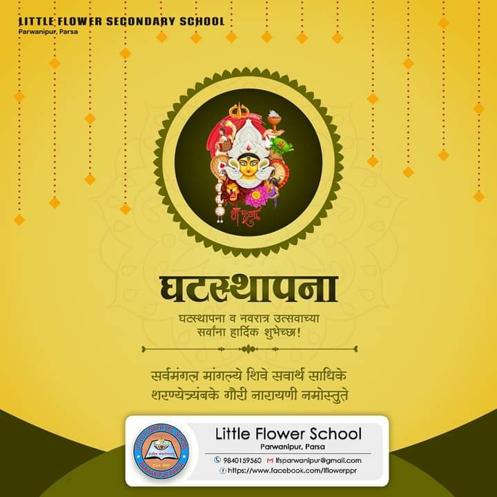

The School was opened by the initiative and generous support of the Jyoti Group of Companies, Nepal in memory of late Mr. Mani Harsh Jyoti who had a special love and concern for children and took keen interest in their welfare.
Learning illumines both the teacher and the taught. This enlightenment, this new vision fills them with the power to transform their lives and the world. The kind of education that the Little Flower Sec. School is committed to impart is in tune with these ideals of education. Accordingly, knowledge is not a means to make a living, but to make the life meaningful. Let what we learn enlighten us. Tejasvi navadhitamastu
Academic excellence is one of the top priorites of our institution. Education is for the growth of the intellectual, mental as well as the spiritual faculties. It helps students to grow into a mature, responsible, disciplined and patriotic citizen. We prepare students to become confident enough to face the challenges of a competitive world and to be committed to the service of fellow men. They will be helped to join the mainstream of the nation and appreciate and preserve their culture and values. Besides imparting academic excellence, the school also tries to inculcate in the students leadership qualities, through co-curricular and extra-curricular activities, sense SO that they may cultivate a of belonging and concern for the underprivileged and the oppressed in the society. The school shall not leave any stone unturned to make education more relevant and meaningful, thus empowering the students to face the challenges of their life ahead.
 |
 |  |
|---|